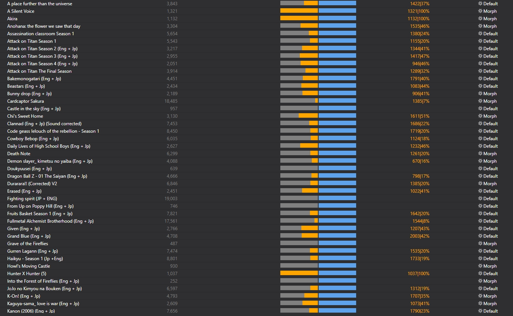
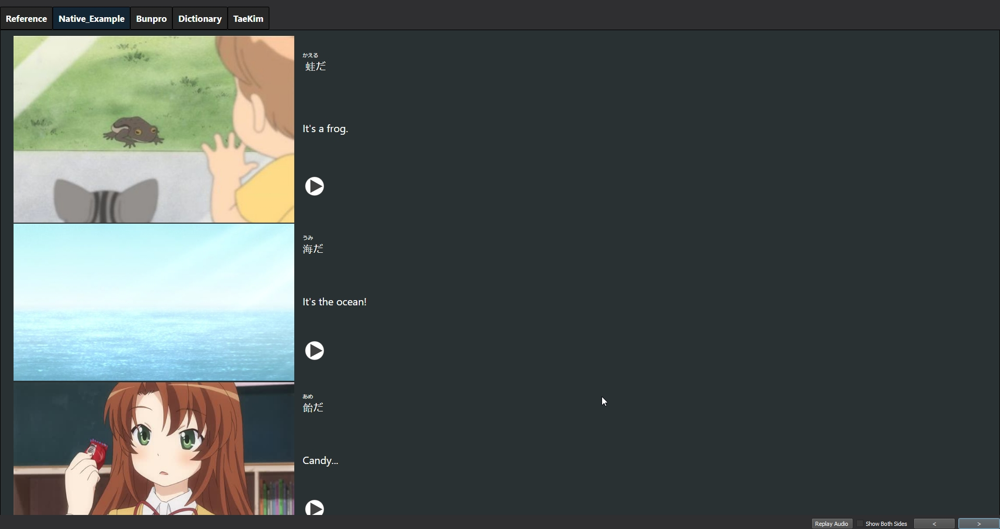
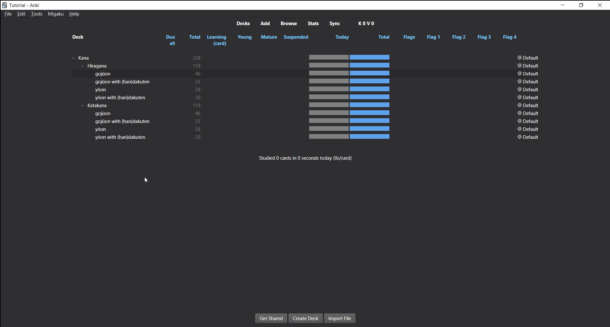
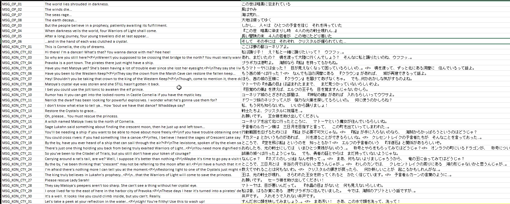
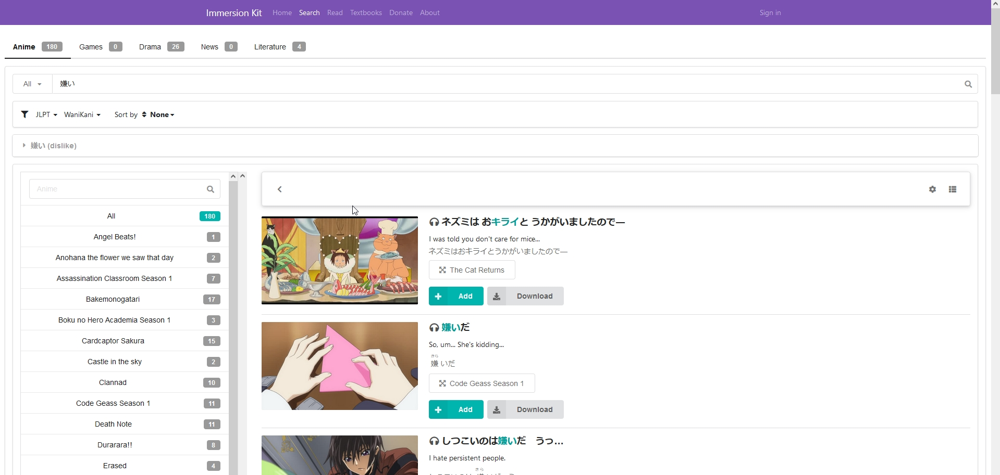
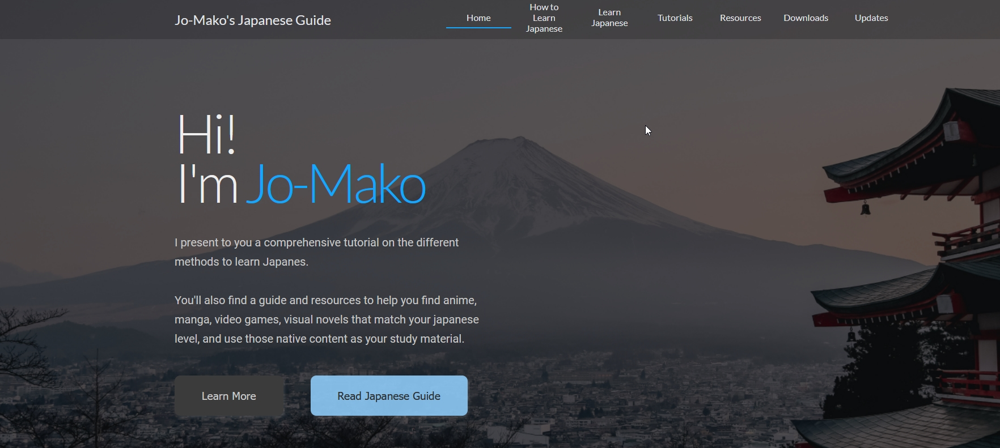
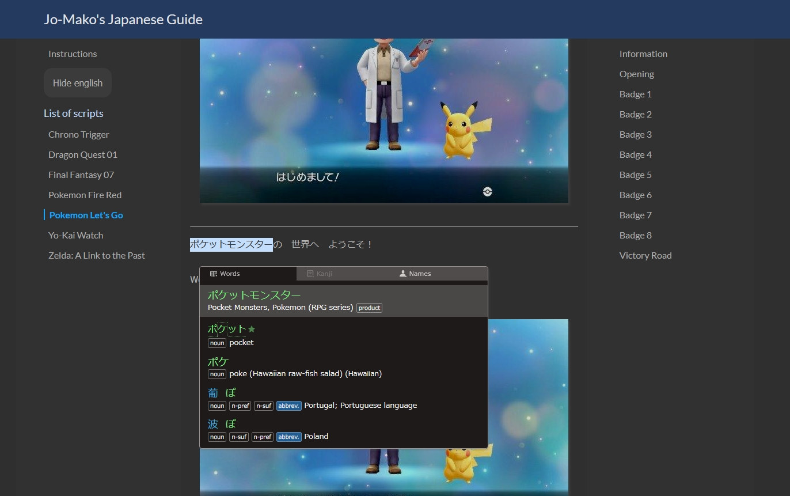

Progress Report #5
It's been a while.
No introduction, let's get to the new stuff.
ANKI DECKS
More premade anime
31 new decks, so I'm not gonna list them all, but mostly the missing Ghibli movies, and some popular anime.
Which means that I've made in total 99 decks. Good number to stop.
I don't plan on making more, exept for the last part of Attack on Titan when it comes out.
Maybe some Kurosawa movies at some point. Maybe.

All this was done so I could have more examples for my core anime deck.
Core Anime Anki deck
Core Anime 2K Anki deck
What's this ?
If you haven't tried it, it's a vocabulary deck where you learn words by frequency order, each sentence containing only one new word at a time.
Order and examples are based on anime.
After finishing the new anime decks, I had made a total of 99 decks, which I used a bank example for this one.
So I started the deck from scratch so I could have more anime / examples to choose from.
 I have since updated the deck with a little bit more cards, changed a few examples since the first version, and changed the note type a bit.
I have since updated the deck with a little bit more cards, changed a few examples since the first version, and changed the note type a bit.
It also contains grammar cards before they're used in the sentence, to keep the learning progression very smooth.
Since a lot of work has been done with the grammar deck, I'll revise the deck again in the future so it can look a bit more like a "complete course".
However, since I'm also planning on making a course on the website, I'll have to plan ahead to see if both system can work together.
Grammar
I've been working on this grammar deck for a while now, adding more content and refining it everytime I complete a new resource.
This year, I used all the new anime content that I had and added anime example for all the grammar points.
3 examples for each. So that's about 800 anime examples handpicked.

Beause I got to look into my anki database for each grammar, I was a able to check each time the number of time it appears.
So you know have a frequency field for the deck. I can check how important the grammar is, or even order the cards by frequency if you want.
I also added the lessons from Tae Kim that's still very popular despite not being very good in my opinion.
Kana all in One
Not that important, but for the sake of completion, I've made a deck to learn kana and katakana.
I tried to make it as comprehensive as possible.

Video Games
Persona 5 was easy to dump. I tried playing 3 and 4 but it's just not my thing, so I won't make the complete deck.
Also it's more than 100 hours to complete ? Just no.
I did however Pokemon finished Pokemon Mystery Dungeon.
Pokemon is one of the easy games to play in japanese. This one is even easier than the main franchise.
Yotsuba Vol 4
Took me forever to make, but it's done.
I added it for free if you already bought volume 3.
Otherwise the price is the same.
It takes too much time to make, and I like them less than the video games ones as sutdy material, so that will probably be my last manga deck.
SPREADHSEET
More decks
On top of my decks, I've also added those made by other people on the mediafire blog.
I don't if there less download than before, but what's clear is that there's almost no more deck being made now.
I usually only add decks from top rated anime, but reddit user Cacophony wanted to have a comprehensive list, so he took it on himself to add all the missing decks.
With annotations. I know first hand how much time it takes, so thanks to him, that's a lot of work.
More Game Scripts
I've found, or just though of looking up some new games.
Story of Seasons, the mana games, Chrono Cross, Kingdom Hearts, Xenoblade, Nier, Monster Hunter... but especially the old but latest version of the Final Fantasy games.
The scripts before were based on old transcritp, sometimes without kanji.
With the new pixel remaster, you get to play the game in their arguably best version, but also, with a clean script.
Since the data was easy to dump, I've made some spreadsheet with eng and jap next to each other so you read as you play without the need of ocr.
If you've never played them go for it.

WEBSITES
Immersion Kit
We've been talking about it for years now with Akira Sensei, the jrpg playing japanese teacher from Japanese Quest.
He wanted a database of anime / video games to showcase example for words or grammar using that native content.
But neither of us were tech savy to make that kind of thing.
He mentionned it again on his discord and Purin reached out to me as we were in contact since I gave feedback for Game2text.
We joined forces and he made the website in only a few weeks using my content.
A database of native content accessible online, from your phone. Pretty cool.

The website has a patreon if you want to support, but I want to point out that I'm not getting any of that money.
This, plus the fact that I don't have the time to participate further led to me not being involved with the website no more.
One of the issue is that some sentences are not perfect. Bad translation or bad sync.
Since the decks were made with subs2srs, there are some bad cards.
It doesn't matter much when studying in Anki, as you can delete, suspend pick another card easily, but it can be frustrating on the website, so more adding content is not a priority right now.
I'd also point out that if you use Anki, you can also use it as a database, which is what I do.
Look up the manual for the way to do advanced searches.
This website
I was using a google website to post links, tutorials and all that. But being limited by the possibilities, I started to look for other options.
So Unbound reached out on discord and made this website.
No, it's up to me to make the content and migrate what is on the google website to this one.
I'm pretty slow.

Game Scripts
One of the things I couldn't have made before on the old site.
I made a html version of my anki decks so you can use Jrpg scripts as reading material.
I got fancy considering my coding skills and added a button do hide and display the english sentences.
Since the text can be pretty long, I also added a table of content on the side so you can get to a part of the game more easily.

PROJECTS
Guide and Tutorials
As I'm rebuilding since website, it's going to give me the opportunity to update my previous guide.
I have more experience and knowledge now, there are also new tools, so I'll be sure to cover that.
I'm also going to revisit and add new tutorials, for Anki, Morphman, my readability files, subs2srs and all that.
If you have any proposition, don't hesitate to reach out.
Project - Anime Course
I have two major projects for 2022. No idea if I'll see them to completion.
The first one is to keep working on the grammar deck.
I'm going through Cure Dolly right now, and as expected, the more logical approach means that I'll restructure everything and build better foundation.
Once I'm done I'll finally be able to build a grammar guide on my own.
Tae Kim is still the main resource recommended unfortunately and I think we can do better.
We can improve the structure of the course, have better explanation, especially compared to Cure Dolly, and use native examples.
As a mean time I added the grammar dump of my anki deck. So you can a page with all the grammar references for easy look up.
Project - Reading course
Since I understand it can be boring to build up grammar, I'm designing a second course so you can get to it asap.
The course will be based on reading with jrpg material.
I'll provide a list of vocabulary and grammar to learn, and the introduction of the game.
I'll go over each line and explain what's going on.
I'll organize everything so you only have a few words to learn, and then be able to read a chapter, or story, or beginning of a game.
To make this possible, I added the japanese folklore short stories to the readability list, all manga from the late bilingualmanga.com, and the scripts for 50 jrpgs.
Therefore a lot of popular games scripts have been added to the spreadsheet, and I followed the poll that I've made and many answered for their favourite games.
Thanks to those who participated bloodborn and other stuff I wouldn't have considered otherwise are included.